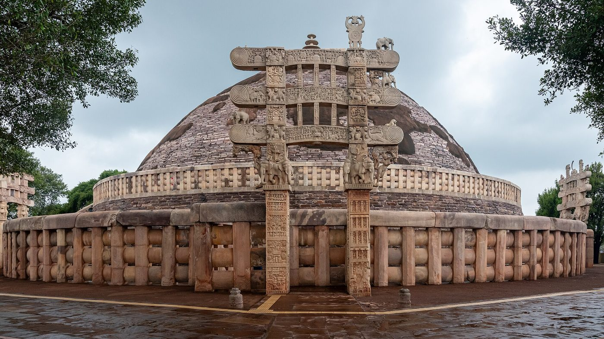
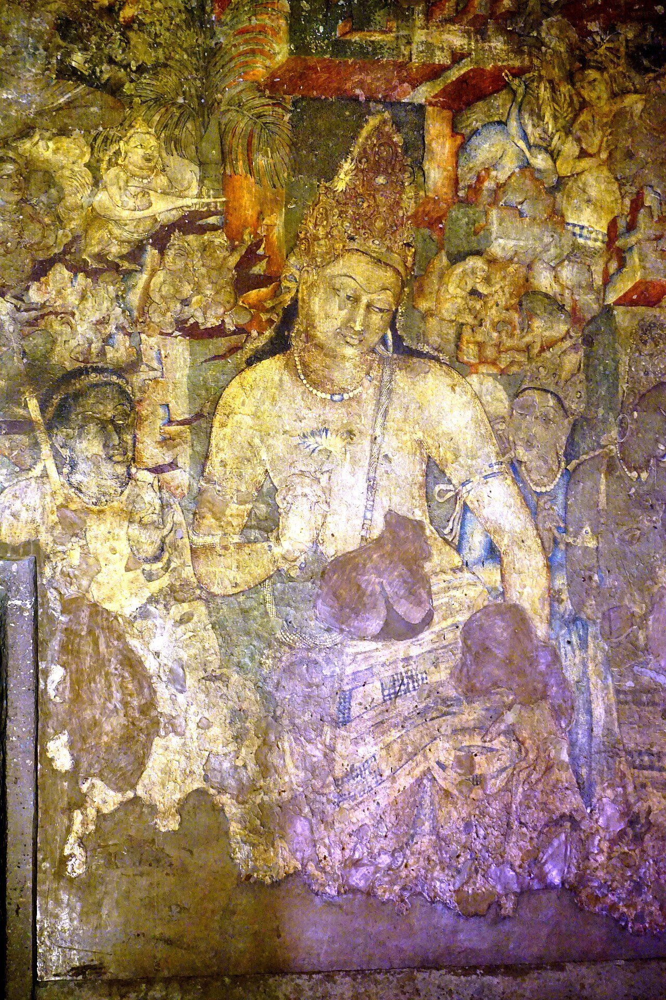
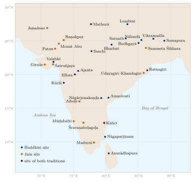

Chapter 14: Shared Heritage: Interactions, Art, and Legacy¶
14.1 The Traditions in Contact¶
The Buddhist, Jain and Brahmanical traditions did not develop in isolation. For more than two thousand years they shared patrons, sites, languages and literary forms, and they argued with one another in a common vocabulary of philosophy. This chapter does not restate the doctrines described in earlier chapters. It asks instead what the traditions did to and with each other — in royal policy, in debate, in art and literature, and in their attitudes to non-harming, caste and gender — and how they have fared in modern India.
14.2 Aśoka and the Mauryan Patronage¶
The earliest datable evidence for the relations between the religious communities of India comes from the edicts of the Maurya emperor Aśoka (r. c. 268–232 BCE), whose patronage helped Buddhism to spread far beyond its homeland and whose edicts commend respect for all religious groups, Jains among them (Thapar 1961).
Aśoka’s rock and pillar edicts, inscribed across the subcontinent, are the earliest substantial corpus of datable inscriptions in India. Aśoka became a Buddhist lay follower, and Rock Edict XIII expresses his remorse for the slaughter of the Kaliṅga war; but his “dhamma” as set out in the edicts is a general morality of non-harming, respect and restraint addressed to all his subjects (Table 14.1).
| Policy | Details |
|---|---|
| Respect for all sects | Rock Edict XII urges restraint in speech and honour to all sects; Pillar Edict VII appoints officers for the Saṅgha, brāhmaṇas, Ājīvikas and Nigaṇṭhas (Jains) |
| Ahiṃsā promotion | Rock Edict I forbids animal sacrifice (at least at the capital) and records the reduction of slaughter in the royal kitchens; Rock Edict II provides medical care for humans and animals; Pillar Edict V protects listed species |
| Dhamma officers | Appointment of dhamma-mahāmātras to promote moral conduct among all communities |
| Buddhist missions | Rock Edict XIII names Hellenistic kings to whom envoys of dhamma were sent; the Sri Lankan chronicles credit Aśoka’s son Mahinda with the mission to the island |
| Third Council | The Pāli chronicles attribute to him patronage of a Third Council at Pāṭaliputra; the edicts do not mention it, though some (the “schism edicts”) concern unity in the Saṅgha |
| Ājīvika caves | The Barabar Hill caves were dedicated by Aśoka to Ājīvika ascetics |
The edicts were themselves a turning point in the modern recovery of early Indian history. They are written in Prakrit, mostly in the Brāhmī script, in Kharoṣṭhī at Shahbazgarhi and Mansehra in the north-west, and in Greek and Aramaic versions at Kandahar. James Prinsep deciphered Brāhmī in 1837, but the king of the edicts, who calls himself “Beloved of the Gods” (Devānaṃpiya) Piyadasi, was securely identified with the Aśoka of the Buddhist chronicles only when the Maski edict, found in 1915, gave his name. The pillar at Rummindei (Lumbinī) records that Aśoka visited the Buddha’s birthplace and reduced the village’s tax, and the Nigali Sagar pillar records his enlargement of the stūpa of an earlier Buddha, Konākamana; these inscriptions are the oldest datable evidence for the Buddhist cult of places and relics (Thapar 1961).
In Jain tradition (though not in contemporary inscriptions), Aśoka’s grandson Samprati is credited with extensive patronage of Jainism, particularly in western and southern India. The Jain tradition regards Samprati much as the Buddhist tradition regards Aśoka — as a royal champion who facilitated the spread of the faith.
14.3 Philosophical Dialogues and Debates¶
Philosophical debate (vāda, śāstrārtha) was conducted in person at courts and monasteries (Chapter 7, Section 7.9), but its lasting record is written: commentaries and treatises in which an author states an opponent’s view (pūrvapakṣa) and refutes it. Buddhist, Jain and Brahmanical thinkers read and answered one another for more than a millennium, and many lost works are known only through their rivals’ quotations.
14.3.1 Key Areas of Debate¶
The deepest disagreement was over the self. Buddhism denies a permanent self (anātman), Jainism affirms an eternal individual soul (jīva), and the Vedāntic and Nyāya traditions affirm a self of different kinds; the Nyāya defence of the self against the Buddhists, culminating in Udayana’s Ātmatattvaviveka, is one of the major achievements of Indian philosophy. Closely linked were disputes about the nature of reality — whether things are momentary, as the Buddhist logicians held, or substances persisting through changing modes, as the Jains held, or composed of real atoms and universals, as the Vaiśeṣikas held — and about causation, where the Buddhist doctrine of dependent origination stood against the Sāṃkhya view that the effect pre-exists in its cause. The means of knowledge were argued over throughout: the Buddhist, Jain and Nyāya positions are compared in Table 1.4 (Chapter 1), and later Advaita Vedānta, following the Mīmāṃsaka Kumārila, recognised six pramāṇas. Behind all of these lay the authority of the Veda, which the Buddhists and Jains rejected and the six orthodox (āstika) schools accepted, at least in principle; this was the dividing line in classical Indian classifications of the systems.
14.3.2 Notable Encounters¶
Some of the best-documented exchanges are listed in Table 14.2. They show a pattern: each major Buddhist innovation provoked a Brahmanical or Jain reply, which in turn shaped the next generation of Buddhist argument, so that the history of Indian epistemology after Dignāga cannot be written as the history of any one school.
| Period | Figures | Significance |
|---|---|---|
| c. 2nd c. | Nāgārjuna and the Brahmanical schools | Madhyamaka dialectic against the Nyāya theory of the means of knowledge |
| c. 6th c. | Dignāga and the Naiyāyika Uddyotakara | Buddhist epistemology and its Nyāya critics |
| c. 7th c. | Dharmakīrti and Kumārila Bhaṭṭa | Exchange of written arguments between Buddhist and Mīmāṃsā epistemology |
| c. 8th c. | Śaṅkara and the Buddhist schools | Advaita Vedānta refutes Buddhist realism and idealism while using a two-level theory of truth |
| c. 8th c. | Akalaṅka and Haribhadra (Jain); Śāntarakṣita (Buddhist) | Jain critiques of Dharmakīrti; Haribhadra’s survey of the systems; Śāntarakṣita’s Tattvasaṅgraha |
| c. 11th c. | Udayana (Nyāya) and Ratnakīrti (Buddhist) | Defence and critique of the self and of God |
| 12th c. | Hemacandra (Jain) | Pramāṇamīmāṃsā; Jain epistemology restated for a new age |
14.4 Mutual Influences and Borrowings¶
14.4.1 Buddhist Influence on Brahmanical Thought¶
Buddhist thought left marks on Brahmanical philosophy that its heirs did not always acknowledge. The clearest case is the Āgamaśāstra attributed to the early Vedāntin Gauḍapāda, which uses Madhyamaka and Yogācāra vocabulary and arguments for a non-dualist Vedānta. Śaṅkara’s distinction between conventional and ultimate levels of truth, and his account of the world as māyā, have often been compared with Buddhist doctrine, and his Vedāntin rivals called him a “crypto-Buddhist” (pracchanna bauddha); modern scholars debate how far the charge is justified, and Śaṅkara himself wrote sharp refutations of the Buddhist schools (Williams and Tribe 2000). In logic the influence is beyond dispute. Dignāga, Dharmakīrti and their successors compelled the Naiyāyikas Uddyotakara, Vācaspati Miśra and Udayana and the Mīmāṃsaka Kumārila to sharpen their own theories, and the refinement of Nyāya technique in these debates prepared the way for the “new” Nyāya (Navya-Nyāya) of Gaṅgeśa in the fourteenth century (Chapter 5). It is often suggested, though hard to prove, that the Buddhist monastery also served as a model for the organised Brahmanical monastic orders (maṭha), such as those traditionally ascribed to Śaṅkara.
14.4.2 Jain Influence on Indian Culture¶
The Jain contribution to Indian culture reaches beyond the community in other ways. Jain mendicants and merchants shaped the vegetarianism and the ethic of non-harming of western India, and through them a part of Gandhi’s thought (Section 14.7). Jain lay communities sustained an unusually strong tradition of religious giving — temples, libraries, schools, hospitals and animal shelters (Chapter 13). Jain authors wrote grammars, dictionaries and histories that were used by readers of every faith, and they stand at the beginning of several regional literatures (Chapter 12). And Jain cosmology and karma theory fostered a distinctive strand of Indian mathematics, while the Jain mathematician Mahāvīra wrote one of the standard arithmetic textbooks of the ninth century (Chapter 10).
14.5 Art and Architecture¶
The Buddhist and Jain traditions produced a large share of the surviving art and architecture of early India. Much of it was made for worship and instruction: relic mounds, images and narrative reliefs that taught the life of the Buddha or the Jina to those who walked around them. The architecture of stūpas, caves and temples is described in Volume 16 (Vāstu–Śilpa); this section is concerned with what the monuments show about the two traditions and their patrons (Huntington 1985).
14.5.1 Buddhist Art and Architecture¶
The stūpa, a hemispherical mound housing relics, is the characteristic Buddhist monument; the Great Stūpa at Sanchi (Figure 14.1), whose core goes back to the Mauryan period and whose carved gateways (toraṇa) were added around the turn of the era, and the railing of Bharhut, with its inscribed narrative reliefs, are the classic early examples. In this early art the Buddha himself is shown by symbols — a throne, a tree, footprints, a wheel — and the first images of him in human form appear only in the Kuṣāṇa period, in the Gandhāra region, with its Greco-Roman sculptural conventions, and at Mathurā, in a style rooted in local traditions. The rock-cut monasteries of the Western Ghats (Bhājā, Kārlā, Nashik, Kanheri) and the great stūpas of Amarāvatī and Nāgārjunakoṇḍa in the Krishna valley, the latter patronised largely by the queens and princesses of the Ikṣvāku dynasty, record in their inscriptions gifts from merchants, artisans, householders, monks and nuns as well as from kings (Huntington 1985; Dutt 1962). The paintings of Ajanta (Figure 14.2), most of them of the late fifth century, are the principal surviving body of early Indian painting, and many illustrate Jātaka tales. Outside India, Borobudur in Java (9th century), the Bayon at Angkor (late 12th century) and the temples of Bagan (11th–13th centuries) are among the largest Buddhist monuments; Angkor Wat itself was built as a Vaiṣṇava temple and later became a Buddhist shrine.




14.5.2 Jain Art and Architecture¶
Jain art begins, as far as the evidence goes, with the caves of Udayagiri and Khandagiri in Odisha, associated with the Hāthīgumphā inscription of King Khāravela (1st century BCE), and with the stūpa, images and votive tablets of the Kaṅkālī Ṭīlā at Mathurā (Chapter 13, Section 13.6.3). The Jain caves at Ellora are discussed below. From the late first millennium the most ambitious Jain monuments were temples and colossal images: the Bāhubali of Śravaṇabeḷagoḷa (Figure 8.1), the marble temples of Mount Abu and Raṇakpur (Figure 11.2), whose merchant and ministerial patrons are described in Chapter 13 (Section 13.6.2), and the temple-cities on the sacred hills of Śatruñjaya and Girnār in Gujarat. Jain manuscript painting, above all the illustrated Kalpasūtras of western India from the fourteenth century onwards, preserves the main tradition of book illustration in the region before the Mughal period, with its vivid colours and stylised, angular figures.
14.5.3 Shared and Comparative Sites¶
Several of the great sites belong to more than one tradition, and the comparison between them is instructive (Table 14.3; the principal sites of both traditions are mapped in Figure 14.3). The same workshops and the same donors’ guilds often served Buddhist, Jain and Brahmanical patrons, which is why the art of a period is more alike across traditions than the doctrines of its patrons.

| Site | Period | Traditions | Significance |
|---|---|---|---|
| Sanchi | 3rd c. BCE–12th c. CE | Buddhist | Great Stūpa; four carved toraṇas; Jātaka narratives in stone |
| Bharhut | c. 2nd–1st c. BCE | Buddhist | Early narrative reliefs with labelled Jātaka scenes; the Buddha shown by symbols, not in human form |
| Ajanta | 2nd c. BCE–6th c. CE | Buddhist | Cave murals; the Padmapāṇi Bodhisattva; Jātaka paintings |
| Ellora | 6th–10th c. CE | Buddhist, Jain, Brahmanical | 34 caves: 12 Buddhist, 17 Brahmanical, 5 Jain |
| Udayagiri–Khandagiri | c. 1st c. BCE | Jain | Hāthīgumphā inscription of King Khāravela; early Jain cave sculptures |
| Mathurā | 2nd c. BCE–12th c. CE | Buddhist, Jain, Brahmanical | Major centre of all three traditions; distinctive Mathurā school of sculpture |
| Śravaṇabeḷagoḷa | inscriptions from c. 7th c. CE; tradition links it with Bhadrabāhu and Candragupta Maurya | Jain | Bāhubali colossus (c. 981–983); Candragiri and Vindhyagiri hills; hundreds of inscriptions |
| Sarnath | 3rd c. BCE onwards | Buddhist | Aśoka Pillar (Lion Capital); Dhamekh Stūpa; site of the First Sermon |
14.5.4 Ellora: Three Traditions on One Hillside¶
The cave complex at Ellora (Maharashtra) is the clearest case of three traditions working side by side. Its 34 caves, excavated between the sixth and tenth centuries, fall into three groups in roughly chronological order: the Buddhist caves are the earliest, the Brahmanical caves, culminating in the great Kailāsa temple of the Rāṣṭrakūṭa kings, come next, and the Jain caves (30–34), among them the Indra Sabhā (Cave 32) and Jagannātha Sabhā (Cave 33), are the latest.
Scholarly Note: Ellora and Patronage
The sequence at Ellora is best explained by patronage. Each group was cut while its tradition enjoyed the support of the region’s rulers and wealthy donors, and the Rāṣṭrakūṭas, who sponsored the Kailāsa, also presided over the period of the Jain excavations. The site therefore shows successive and competing patrons, each tradition seeking to match the achievements of the others in the same rock, rather than a deliberate programme of religious pluralism. That the earlier caves were left intact as the later ones were cut beside them is real evidence of coexistence; whether it amounts to “tolerance” in a modern sense is a further question.
14.6 The Contribution to Indian Languages and Literature¶
Both traditions shaped Indian literature, and each was often among the first to write in a regional language (Table 14.4). The Jain contribution — universal history and epic retellings in Prakrit, Sanskrit and Apabhraṃśa, the founding works of Kannada literature, Tamil epics and Old Gujarati rāsa — is described in Chapter 12. This section adds the Buddhist side.
14.6.1 Buddhist Kāvya, Drama and Grammar¶
Buddhist Sanskrit literature begins with Aśvaghoṣa, a poet of the Kuṣāṇa period (1st–2nd century CE) and one of the founders of classical kāvya. His Buddhacarita, a life of the Buddha in twenty-eight cantos, survives complete only in Tibetan and Chinese translation, with roughly its first half in Sanskrit; his Saundarananda tells of the Buddha’s half-brother Nanda, torn between his wife and the monastic life, and turns the conventions of court poetry to the purpose of conversion. Fragments of a play attributed to him, the Śāriputraprakaraṇa, recovered in Central Asia, are among the oldest surviving manuscripts of Sanskrit drama (Aśvaghoṣa 2008; Winternitz 1933). Mātṛceṭa’s hymns to the Buddha, the Śatapañcāśatka (“Hymn in a Hundred and Fifty Verses”) and the Varṇārhavarṇa, were, according to Yijing, learned by every monk in India as soon as he could recite the precepts (Yijing (I-tsing) 1896). Āryaśūra’s Jātakamālā retold thirty-four Jātakas in polished prose and verse, and the avadāna collections, such as the Divyāvadāna, supplied edifying stories of karma and its fruits. A Buddhist story even reached the court stage: the Nāgānanda of King Harṣa (7th century) has as its hero a prince who gives his life for others in the manner of a bodhisattva.
Buddhists also contributed to grammar. Candragomin, a lay Buddhist scholar whose date is disputed (between the fifth and seventh centuries), composed the Cāndra-vyākaraṇa, a concise grammar in the Pāṇinian tradition that omits the Vedic rules; it became the grammar of Buddhists in Kashmir, Nepal and Tibet and was a model for later Pāli grammarians in Sri Lanka (Scharfe 1977). Candragomin is remembered too for a play, the Lokānanda, and a verse letter to a pupil. The monasteries’ interest in secular literature is shown by the Subhāṣitaratnakośa, an anthology of Sanskrit court poetry compiled around 1100 by Vidyākara, a monk of the Jagaddala monastery in Bengal, most of whose verses have nothing to do with Buddhism (Ingalls 1965). In Tamil the Buddhist epic Maṇimēkalai and the grammar Vīracōḻiyam survive, while another Buddhist epic, the Kuṇṭalakēci, is known only from fragments.
| Language/Genre | Buddhist Contribution | Jain Contribution |
|---|---|---|
| Pāli literature | Entire Tipiṭaka; Mahāvaṃsa chronicle; vast commentarial tradition | — |
| Prākrit literature | Limited Prakrit texts | Canonical Āgamas in Ardhamāgadhī; Prakrit poetry and narrative |
| Sanskrit literature | Aśvaghoṣa’s Buddhacarita and Saundarananda; Mātṛceṭa’s hymns; Śāntideva’s Bodhicaryāvatāra; Candragomin’s grammar | Haribhadra, Siddharṣi, Hemacandra; grammars, lexicons and prabandha histories |
| Kannada | — | Kavirājamārga (9th c., from the court of Amoghavarṣa I); Pampa, Ponna, Ranna (“three gems”); the first Kannada prose |
| Tamil | Maṇimēkalai (Cāttaṉār); other Buddhist epics now largely lost; the grammar Vīracōḻiyam (Puttamittiraṉ, 11th c.) | Cīvakacintāmaṇi, Nālaṭiyār; Cilappatikāram, attributed to Iḷaṅkō Aṭikaḷ, traditionally regarded as a Jain monk; the grammar Naṉṉūl (Pavaṇanti, c. 13th c.) |
| Hindi/Apabhraṃśa | Buddhist caryāpadas (early Bengali, Assamese and Odia) | Major Apabhraṃśa literature, e.g. Svayambhū’s Paümacariu and Puṣpadanta’s Mahāpurāṇa; Banārasīdās’s autobiography |
| Gujarati | — | Early Gujarati verse narratives (rāsa) by Jain monks; Jain prose commentaries |
14.7 The Influence of Ahiṃsā on Indian Civilisation¶
The doctrine of ahiṃsā (non-violence), while not exclusive to Buddhism and Jainism, received its most systematic development and its most rigorous practical application within these traditions. Its influence on Indian civilisation as a whole has been great, though it should not be exaggerated: non-harming was also a Brahmanical ideal, prominent in the Upaniṣads, the Dharmaśāstras and the epics.
Ahiṃsā and Indian Ethics
The Śramaṇa traditions’ insistence on ahiṃsā affected Indian ethics in several ways, though in each case alongside Brahmanical developments:
-
Decline of animal sacrifice: Vedic animal sacrifice declined, and Buddhist and Jain criticism was one factor among several. Animal sacrifice nevertheless persists in parts of Hindu practice to this day — for example in Śākta worship at the Kāmākhyā temple in Assam, in parts of Bengal and Odisha, and in Nepal.
-
Vegetarianism: The adoption of vegetarianism by large segments of the Hindu population was probably encouraged by Buddhist and Jain example, especially the strict Jain vegetarianism of western India, together with Brahmanical ideals of purity and non-harming; the history is complex and regionally varied.
-
Animal welfare: The establishment of animal shelters (pāñjarāpoḷ), a characteristically Jain institution, reflects the extension of moral concern to non-human animals.
-
Political philosophy: The ideal of ahiṃsā influenced Indian political thought, from Aśoka’s “conquest by dharma” (dhamma-vijaya) to Mahatma Gandhi’s satyagraha movement. Gandhi drew on many sources, among them the Jain culture of Gujarat and his friendship with the Jain teacher Śrīmad Rājacandra (Raychandbhai), whom he described as a formative influence.
Jain teachers also sought to bring rulers to restrict the killing of animals. According to Jain sources, the Caulukya king Kumārapāla of Gujarat (r. c. 1143–1172), under the influence of Hemacandra, proclaimed bans on animal slaughter in his realm; and the Mughal emperor Akbar, after meeting the Śvetāmbara monk Hīravijaya Sūri in the early 1580s, issued orders forbidding slaughter on certain days, including the days of Paryuṣaṇa (Dundas 2002). Similar negotiations with the Delhi sultans are recorded in Jain sources of the fourteenth century (Chapter 12, Section 12.5).
The influence of ahiṃsā also extends beyond India. Buddhist teaching on compassion, and the bodhisattva precepts, underlay the strict vegetarianism of Chinese monasteries (Chapter 13), and Gandhi’s practice of non-violent resistance, which drew on Jain as well as Hindu, Christian and other sources, in turn inspired Martin Luther King Jr. and the American civil rights movement.
14.8 Caste, Gender and the Śramaṇa Ideal¶
Buddhism and Jainism are often presented as egalitarian protests against caste and as champions of women. The truth is more complicated, and both traditions deserve to be described honestly (Chakravarti 1987; Jaini 1991; Dundas 2002).
14.8.1 Caste¶
The early Buddhist texts reject the brāhmaṇas’ claim to superiority by birth. The Aggañña Sutta (DN 27) mocks the claim that brāhmaṇas were born from Brahmā’s mouth and gives a social, not divine, account of the origin of classes; the Vāseṭṭha Sutta (Sn 3.9) argues that, unlike animals and plants, human beings are not divided into natural species by birth; and the Vasala Sutta (quoted in Chapter 1) redefines the outcaste by conduct. Ordination was open to men and women of every class, and within the Saṅgha seniority was reckoned by ordination, not birth. The Buddha’s disciple Upāli, the authority on the Vinaya, was a barber.
These texts, however, attack brāhmaṇa pretensions more than they attack social hierarchy as such. They often rank the khattiya (warrior-ruler) class above the brāhmaṇas, and Buddhas are said to be born only into the two highest classes. The Vinaya excludes certain people from ordination (debtors, slaves and royal servants without permission, people with some illnesses and disabilities). Uma Chakravarti’s study of early Buddhism shows that the monastic order drew disproportionately on the elite and that Buddhist ethics accepted the existing economic and social order while seeking to moralise it (Chakravarti 1987). In Buddhist societies outside India, caste-like hierarchies persisted: in Sri Lanka the major monastic fraternities long admitted only men of particular castes (Chapter 4).
Jainism likewise rejected the brāhmaṇas’ ritual claims and admitted mendicants of any background. But Jain lay society came to be organised in endogamous caste groups (jñāti), and the Digambara teacher Jinasena’s Ādipurāṇa (9th century) accepted a Jain version of the four varṇas, with Jain rites of passage modelled on Brahmanical ones. Many Jain authorities restricted initiation as a mendicant, especially full Digambara initiation, to members of “respectable” castes (Dundas 2002; Jaini 1979).
In modern India the most important Buddhist challenge to caste came from B. R. Ambedkar. After decades of struggle against untouchability, he concluded that Hinduism could not be reformed from within, and on 14 October 1956 at Nagpur he led several hundred thousand people in a mass conversion to Buddhism, at which the converts took, besides the refuges and precepts, twenty-two vows that included the renunciation of Hindu deities and rites and a commitment to equality. His The Buddha and His Dhamma reinterprets the tradition as a rational, social ethic of liberty, equality and fraternity, setting aside doctrines such as karma as justification of birth status (Ambedkar 1957). The resulting Ambedkarite (Navayāna) Buddhism is today the largest Buddhist community in India: most of the roughly 8.4 million Buddhists recorded in the 2011 Census, the majority of them in Maharashtra, belong to it, and the anniversary of the Nagpur conversion has become a major Buddhist festival.
14.8.2 Gender¶
Both traditions founded orders of nuns early in their history, giving women a recognised religious vocation outside the household — something unusual in the ancient world. The Therīgāthā preserves the voices of early Buddhist nuns, and Jain tradition reports that Mahāvīra’s community included far more nuns than monks; to this day Jain nuns outnumber Jain monks.
At the same time, both traditions subordinated nuns to monks. The founding of the Buddhist order of nuns and its eight “weighty rules” are discussed in Chapter 2 (Section 2.14.2), and the later history of the order — its lapse in the Theravāda countries, its absence in Tibet and the contested modern revival — in Chapter 13 (Section 13.3). Texts of several periods also express suspicion of women as obstacles to monks’ discipline, and a widespread later view held that a woman could not become a Buddha without first being reborn as a man.
In Jainism, the question of women’s liberation became a principal point of dispute between the sects. Śvetāmbaras hold that women can attain liberation and that the nineteenth Tīrthaṅkara, Malli, was a woman. Digambaras deny that a woman can attain liberation in a female body, chiefly because women cannot practise the total nudity that, for them, complete renunciation requires; in Digambara tradition Malli was a man (Jaini 1991). Padmanabh Jaini’s study of this long debate shows how arguments about the female body, modesty and spiritual capacity were developed on both sides.
These limitations do not cancel the real opportunities the Śramaṇa traditions offered to women and to people of low status; but they show that the traditions’ ideals were realised only partially within societies that remained hierarchical. Modern Buddhist and Jain reformers — Ambedkarite Buddhists, campaigners for the full ordination of Buddhist women, and Jain women scholars and nuns — continue to press these questions.
14.9 Modern Movements and Revivals¶
14.9.1 The Buddhist Revival in India¶
The rediscovery of the Buddhist sites, Anagārika Dharmapāla’s campaign for Bodhgaya and Ambedkar’s conversion movement are described in Chapter 7 (Section 7.11.5) and above. Two further currents have made India once again a centre of Buddhist practice: the Vipassanā courses of S. N. Goenka, which have brought a form of Burmese Theravāda meditation to a wide Indian public (Chapter 4), and the re-founding in India, after 1959, of the great Tibetan monastic universities under the 14th Dalai Lama, whose government in exile is based at Dharamsala.
14.9.2 Jainism in the Modern World¶
The 2011 Census of India recorded about 4.5 million Jains, concentrated in Maharashtra, Rajasthan, Gujarat, Madhya Pradesh and Karnataka. The diaspora is largely Gujarati in origin. Jain merchants settled in East Africa in the colonial period, and many moved on to Britain after the Africanisation policies of Kenya and the expulsion of Asians from Uganda in 1972; others emigrated directly to North America from the 1960s. Diaspora communities have built temples and centres, often shared by Śvetāmbaras and Digambaras, and have had to adapt practices that presuppose the presence of mendicants, since fully initiated monks and nuns do not normally travel by vehicle. One response was the creation by the Terāpanthī order in 1980 of an intermediate grade of novices (samaṇ and samaṇī) who may travel abroad to teach (Dundas 2002). Jain writers and organisations have also presented the tradition’s ethics in modern terms — non-harming as environmental ethics (Chapple 2002), non-possession as a model of business conduct, many-sidedness as a basis for inter-religious dialogue — and Jain studies has become an established academic field.
Modern Jainism has also produced movements that shift the weight of religious life from the mendicant order towards the individual’s inner understanding. Two of them are described in Volume 24 (Samanvaya): the following of the Gujarati jeweller and poet Śrīmad Rājacandra (1867–1901), who never took mendicant vows, and the lay movement of Kānjī Svāmī (1890–1980), a Sthānakavāsī monk who, after reading Kundakunda’s Samayasāra (Chapter 9, Section 9.8.1), gave up his mendicant status at Songadh in Saurashtra in 1934 or 1935 and declared himself a Digambara layman. Kānjī Svāmī’s following spread from Gujarat to the East African and British diaspora; its emphasis on the “absolute” standpoint, from which the pure soul is untouched by karma and outward conduct, was criticised by Digambara mendicants as a devaluation of ascetic discipline (Dundas 2002; Banks 1992). The Terāpanthī order took a different course, adapting mendicant teaching to modern life: under Ācārya Tulsī and his successor Ācārya Mahāprajña (1920–2010) it developed a system of “perception meditation” (prekṣā dhyāna) in the 1970s and founded the Jain Vishva Bharati at Ladnun in Rajasthan, which became a university (Vallely 2002). Among the Digambaras, the revival of naked monks begun by Śāntisāgara (Chapter 8) has continued to grow; one of the largest modern orders formed around Ācārya Vidyāsāgara (1946–2024).
14.10 Conclusion: Two Traditions Read Together¶
Reading Buddhism and Jainism side by side, as this volume has done, brings out what neither shows alone. The two traditions began in the same region, in the same generation and with the same rejection of the authority of the Veda, yet they reached opposite conclusions about the self, and from that disagreement followed different accounts of karma, of austerity and of what non-harming demands. Their institutional histories diverged as sharply. Buddhism became a pan-Asian religion carried by monasteries that could take root anywhere a patron would support them, and in India it ended when its great monasteries were destroyed; Jainism remained an Indian religion bound to a disciplined lay community, and it survived the same conquests (Chapter 13, Section 13.7).
Both were knowledge systems in the full sense that this series uses. Buddhist logicians and Jain philosophers set much of the agenda of Indian epistemology; Jain mathematicians, grammarians and historians, and Buddhist poets, grammarians and physicians, contributed to learning that was shared across religious boundaries; and much of what each achieved is known to us only because its rivals preserved it in order to refute it. Both also fell short of their own ideals on caste and gender, as their own texts and inscriptions make plain.
Finally, both traditions are read today through modern lenses — mindfulness as therapy, many-sidedness as tolerance, non-harming as environmentalism, Buddhism as social liberation. Some of these readings have firm roots in the classical sources, others are new; several have been made by thinkers, such as Ambedkar, who belong to the history of the traditions themselves. The historian’s task is not to reject them but to distinguish them from what the classical texts say. That distinction, rather than any claim of priority or superiority, is the best basis on which these traditions can take their place in an account of Indian knowledge.
Iti Buddha–Jina Prabhā samāptā
Here ends Buddha–Jina Prabhā